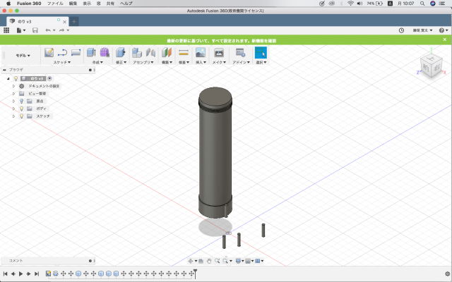
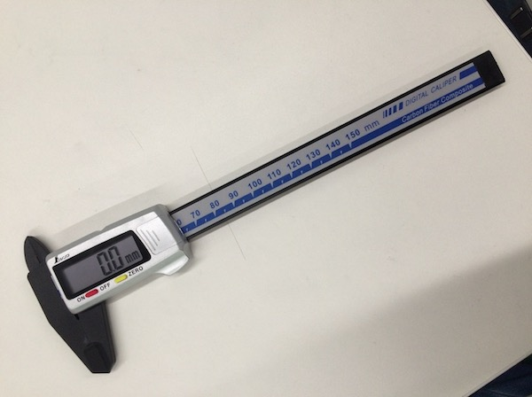
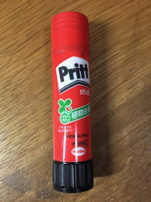

CAD作成
作ったモデル

計測に使用したもの
デジタルノギス カーボンファイバー製 150mm

モデルはPrittのり

縦84.9mm横19.6mm キャップの凸凹縦1mm 横20mm
感想
最初は扱いに慣れておらず形を作るのに 時間が掛かったが、全体的には形になった。
苦労したのが凸凹の部分で、ここは先生に効率のいい やり方を教わった。下の回転させる黒い部分は、別のモデルを 作って埋め込んで行こうと思ったがのりのモデルの距離感がつかめず 失敗してしまった。